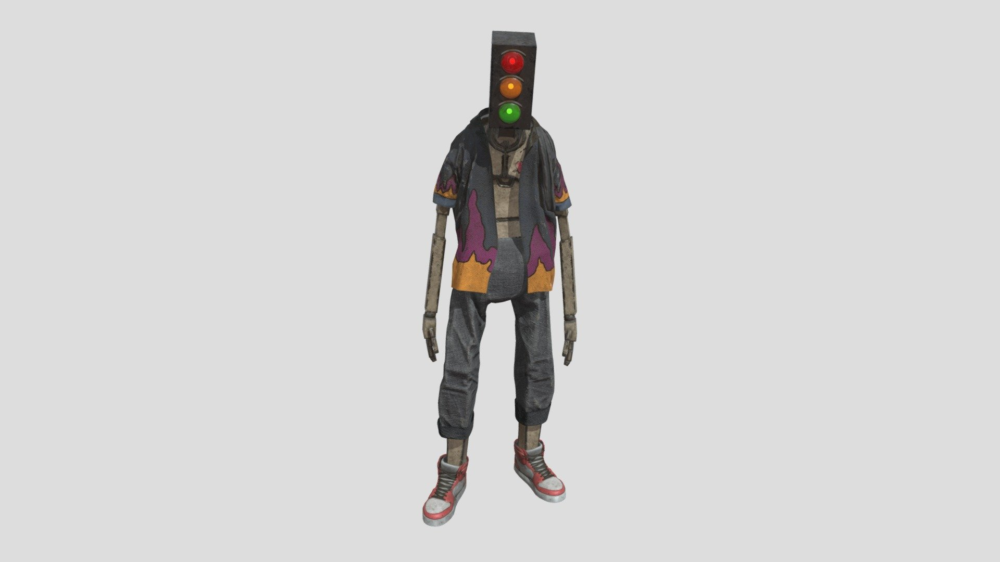

Find the character.
I started with a quick concept drawing for an original robot, using Stray’s character designs as the visual starting point.
PROJECT FILE / 001
An original character inspired by the world of Stray, created for my final-year project at Staffordshire University.

THE IDEA
After playing Stray, I wanted to design a robot that felt at home in its world. I began with my own concept sketch and developed it into a textured 3D character.
The traffic-light head gives the character a clear focal point, while the patterned clothing and red trainers give it a recognisable silhouette and colour palette.
THE PROCESS
I started with a quick concept drawing for an original robot, using Stray’s character designs as the visual starting point.
I created the low-poly model in 3ds Max, then used ZBrush for the high-poly sculpt.
I textured the character in Substance Painter, bringing the mechanical forms, clothing and colour choices together.
TAKE A CLOSER LOOK
Rotate and zoom the finished character.
Loads the 3D viewer from Sketchfab.